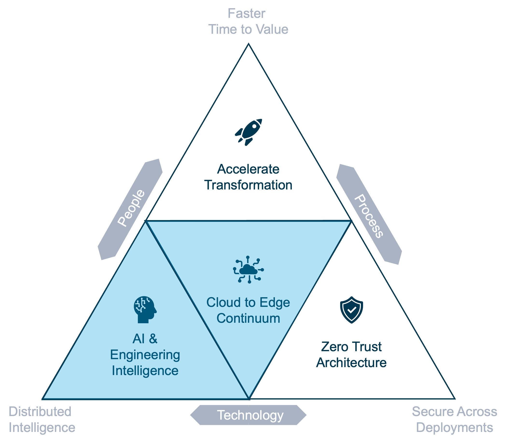
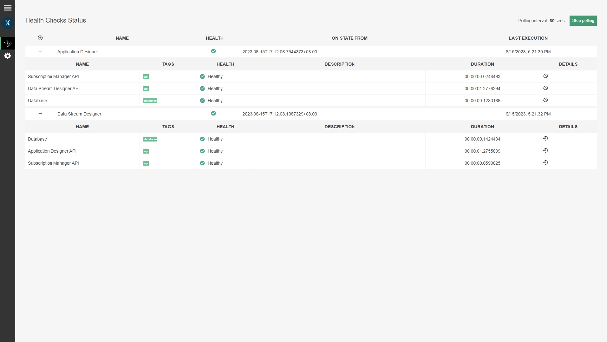
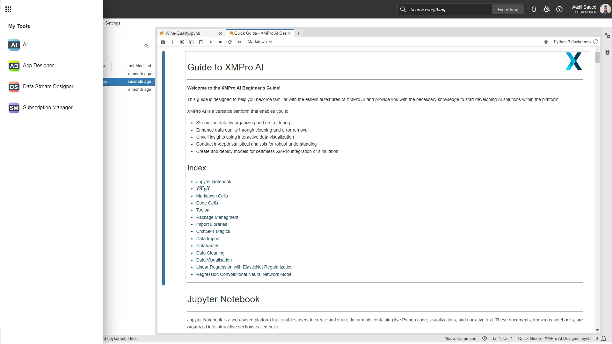
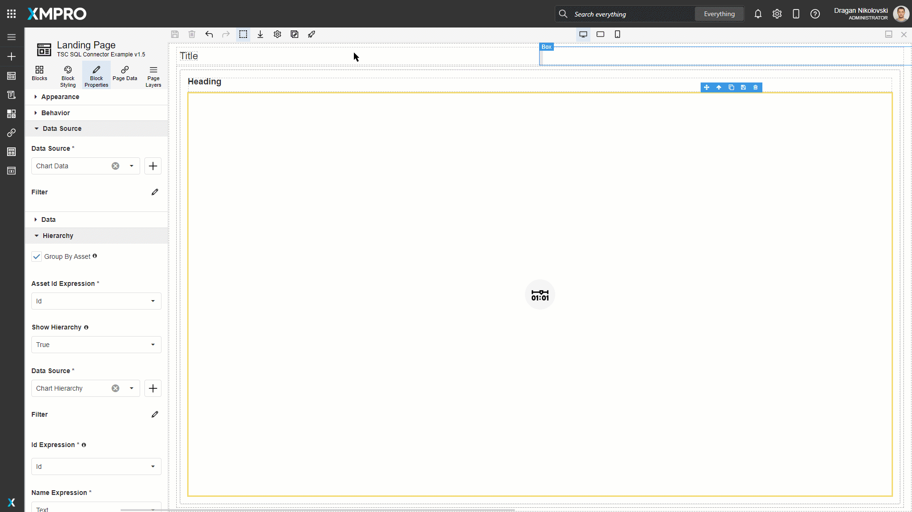

What's New in 4.3
Overview
Introducing the XMPro 4.3 release, where we continue to prioritize initiatives aligned with our higher goals of achieving faster time to value, distributed intelligence, and secure deployments. Our product roadmap outlines how each initiative serves a specific purpose within these categories.
We have concentrated our efforts on two key initiatives: the cloud-to-edge continuum and AI & engineering excellence. These areas reflect our commitment to delivering cutting-edge solutions and ensuring excellence in artificial intelligence and engineering practices.

Cloud-to-Edge Continuum
The XMPro platform needs to be performant, scalable, and monitored in order to be fully cloud agnostic. We strive to implement industry best practices to achieve this.
Auto Scale - Distributed Caching
This feature aligns with the EDGE continuum bucket, enabling XMPro to run distributed infrastructure essential for HDT cloud computing.
Auto Scale, XMPro's implementation of caching has been overhauled with a distributed storage feature that promises improved caching capabilities. It offers a superior caching approach that is highly recommended, particularly for larger production-ready implementations.
It uses a technology called Redis, a flexible technology that offers a distributed storage feature that makes use of multiple smaller cache entries. In this setup, some nodes act as masters, handling the processing of data, while others serve as backups. This way, if one node goes down, the others can take over to keep the system running smoothly.
These changes improve the performance and reliability of our caching system, ensuring that data is stored and accessed efficiently, particularly for larger production-ready implementations.
Health Check Endpoints
The introduction of health check endpoints is essential for cloud-agnostic applications as they enable platform independence and decouple it from specific cloud provider dependencies, like Azure's Application Insights.
Health check endpoints play a crucial role by allowing easy identification of problems without requiring extensive technical knowledge or login credentials. They provide a snapshot of each XMPro product's health, including its interconnected components and overall system status.
Administrators can configure health checks and add additional systems to monitor, further enhancing the product's stability and performance.
The output can be consumed by your preferred provider, such as Azure's Application Insights, or use the default Health UI.

Logging Provider Support
Logging Provider Support is a new feature that introduces the implementation of Serilog, a diagnostic logging library for .NET applications. This library enables the capture of log events with structured data. Providing administrators with valuable insights into the behavior and performance of XMPro.
Three logging outputs are supported: Logging to file support has been added for all XMPro products, whereas Application Insights and Datadog support has been added for all products aside from Subscription Manager. These are cloud-based application monitoring and analytics services.
Deployment Automation
We've changed the way our database installs and upgrades are applied. For new installs, our products will automatically install the required database changes. For upgrades, our products will detect what database changes are needed and make these.
We are moving away from doing database installs and upgrades from the desktop installer, with all database installs and upgrades happening automatically from within the products.
Accelerate time to value by choosing to automatically deploy the regular, smaller releases to your pre-prod environment, rather than less frequent, larger upgrades.
AI and Engineering Excellence
The new XMPro AI article describes various ways in which AI is infused into the Digital Twin Platform.
XMPro Notebook
This release introduces the XMPro Notebook, which is an embedded version of Jupyterhub and will be available for evaluation on new XMPro Freemium accounts.
XMPro Notebook provides an intuitive and flexible interface for data analysis, scientific computing, machine learning, and more. Users can write code and execute cells independently, which facilitates step-by-step exploration and experimentation with real-time data.
Existing customers and Freemium users can contact us for access and licensing options. Please visit XMPro AI for more information about XMPro AI and XMPro's Intelligent Digital Twin Suite.

Application Designer's Time Series Chart Performance
Performance of the Time Series Chart Block, when using the new TSC SQL Connector, has been significantly enhanced due to optimized client-side querying.
The advantage of this Connector is that it is optimized for server-side processing of the required grouping into buckets needed for the Time Series Chart data points, reducing the response time and size, and enabling quicker retrieval of data for longer periods.
Look out for the future release of TSC-optimized Azure Data Explorer and Historian Connectors.

Last modified: May 30, 2025